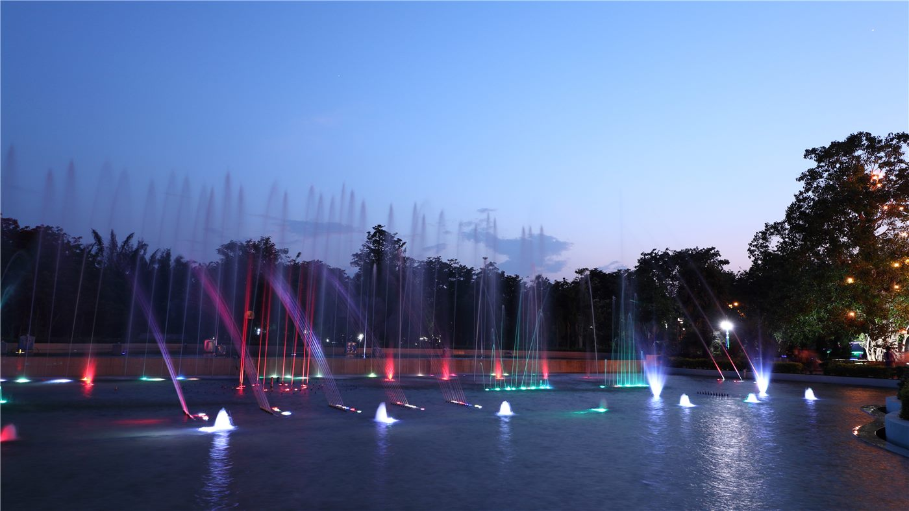

橋중국
중국중국, EU에 '자유무역·대화' 강조… 통상 협력 의지
중국 외교부, EU와의 경제·통상 관계는 상호이익이라며 보호무역 자제 촉구.
중국 외교부, EU와의 경제·통상 관계는 상호이익이라며 보호무역 자제 촉구.
왕이 외교부장, 글로벌 거버넌스 개혁 방향 제시. 중국, 7월 세계 AI 회의 개최 예정.

상무부 집계, 서비스 교역 확대 지속. 디지털·관광·운송이 견인.

수출 증가폭이 둔화되며 흑자가 축소됐다. 대외 수요 약화 신호로 읽힌다.

시진핑 중국 국가주석이 베이징을 방문한 미얀마 민아웅흘라잉 대통령과 정상회담을 갖고 협력 문서 서명식에 함께 참석했다. 양국은 경제·인프라 협력을 확대하기로 했다.
중국 외교부가 미국과 이란이 1단계 양해각서에 도달한 데 대해 정치적·외교적 해결을 지지한다는 입장을 밝혔다.
중국 외교부가 중국에서 활동하는 외국 기업에 대해 지원과 편의를 계속 제공하겠다는 입장을 밝혔다. 대외 개방 기조를 재확인한 것으로 풀이된다.
세계에서 단일 기기 기준 저장 용량이 가장 큰 축열(저장) 설비가 중국에서 착공됐다. 재생에너지의 간헐성을 보완하는 대형 에너지저장 인프라로 주목된다.
중국의 올여름 밀 수확이 90%에 가까워졌다. 주요 곡창지대의 수확이 순조롭게 진행되면서 식량 수급 안정에 대한 기대가 높아지고 있다.
중국 국방부의 제10대 신임 대변인이 처음으로 공식 브리핑에 나섰다. 국방부 대변인 교체는 대외 소통 창구의 정례적 인사로 받아들여진다.
환구망 사평이 일본 자동차 업체가 중국 브랜드에 위탁생산(OEM)을 맡기는 현상을 다뤘다. 전기차 전환기에 나타난 산업 구조의 변화를 보여 주는 사례다.

중국 각지에서 단오절(端午節)을 맞아 용선(드래곤보트) 경주와 쭝쯔 만들기 등 다채로운 전통 행사가 열렸다. 세시 풍속을 통한 문화 계승의 장이 됐다.
인민망이 중국 통신 산업의 품질 향상과 고도화가 여전히 진행 중인 과제라고 짚었다. 네트워크 확충과 서비스 질 개선을 함께 추진해야 한다는 진단이다.
인민망이 도시를 벗어난 농촌 마을을 가꿔 지역 경제를 살리는 향촌 진흥 사례를 소개했다. 관광·특산품과 결합한 농촌 활성화가 주목받고 있다.